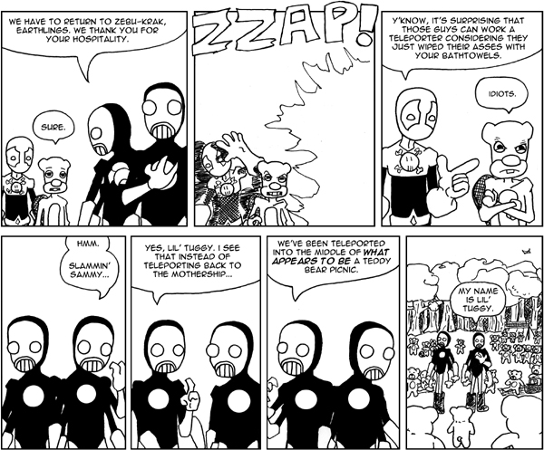
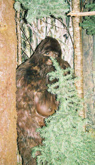

Nine years of everything
|

I’ve been writing this column for nine years. I was here with you through the dot-com boom and the crash. I made fun of the rise of Web 2.0 when that was called for, and screamed about digital surveillance under the USA-PATRIOT Act when that was required (actually, that’s still required). I’ve ranted about everything from obscenity law to genetic engineering, and I’ve managed to stretch this column’s techie mandate to include meditations on electronic music and sexology. Every week I gave you my latest brain dump, even when I was visiting family in Saskatchewan or taking a year off from regular journalism work to study at MIT.

Andrew W.K.: Appreciating lipstick
|

photo / fredcamino  Andrew W.K. performing at the Knitting Factory in Hollywood
Andrew W.K. performing at the Knitting Factory in Hollywood
Andrew W.K. performing at the Knitting Factory in Hollywood | Related links |
|---|
Before speaking with Andrew W.K. I knew one definitive fact about him: The guy likes to party. With such songs as “Party Hard,” “Party ‘Til You Puke,” and “We Want Fun,” Andrew has established himself as a unique voice in rock ’n’ roll. But in the past few years he’s extended what it means to be Andrew W.K. by going on tours and speaking on the beauty of partying and pure love. Most interviews only last 20 to 30 minutes, but Andrew talked with me for an hour and a half about everything from the meaning of life to the joys of wearing lipstick. He even gave me my very own personalized motivational speech. Don’t miss his show at Emo’s on July 4, and check out his production skills on Reggae legend Lee Scratch Perry’s new album, which hits stores August 19.
That Other Paper What is the worst question you’ve ever been asked in an interview?
Andrew W.K. I don’t know – I’ve probably blocked it out. Actually, the questions over the last couple of years have just been getting better and better. I always thought that interview questions were good no matter what the question was, and that it was really up to the interviewee to come up with novel answers. I always understood the idea of people getting a little angry at interview questions, but I thought it was a little perverse, because why would they be doing the interview then? And this whole idea that it’s all up to the interviewer to make a good interview didn’t gel with my vibe. So I really get into doing interviews and have grown to love it very, very much.
Theft and independence
|

photo / danesparza 
I’m trying to imagine the look on the face of whoever stole my credit card number as they roll up to the Selma, California, Wienerschnitzel this morning for what has become an almost daily pilgrimage. Their likely agenda, based on my husband Ross’s and my recent profanity-laced examination of the last three weeks of our online credit card statement:
11:30am: Roll out of bed and throw on some flip-flops for a hearty drive-through breakfast at Wienerschnitzel.
Noon: Hit up Wal-Mart for the day’s first $400 shopping spree. [Suspected purchases: stacks of bad top-40 CDs, XL yellow tube top, power tools, crate of Huggies for miscellaneous spawn, Natural Lite beer].
2:00pm: Stop by Valero to gas up the monster truck and buy cigs and Slim Jims.
Craigslist: Your Bigfoot sighting could be your ticket to Blogspot fame
|

photo / CommandZed Nice rack
Nice rack Have you seen Bigfoot around lately? If you have, Archer Cannon from Liberty Hill, Texas wants you to let him know. He’s starting a blog on the subject and wants to talk about your experiences with you.
From his Craigslist post:
Bigfoot in Texas?? (Liberty Hill Area)
Hello. I am a native Austinite and my family has been in Texas for years. I have seen a bigfoot, I have heard it screams, and so has my sister, my son, and my brother.. These were all seen at different times; however almost all on the same piece of heavily wooded land in Liberty Hill, Texas. I sent my stories to BFRO, and never heard from them. They do have one story that speaks of a Bigfoot encounter near Lake Travis sometime ago and that is it.


Recent comments